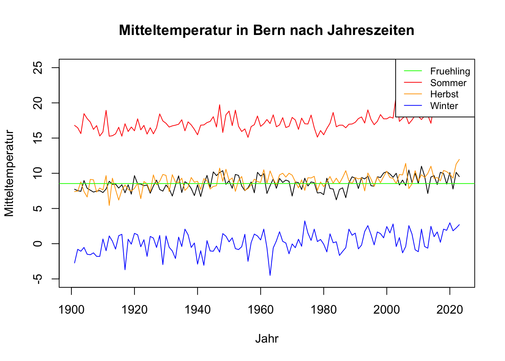
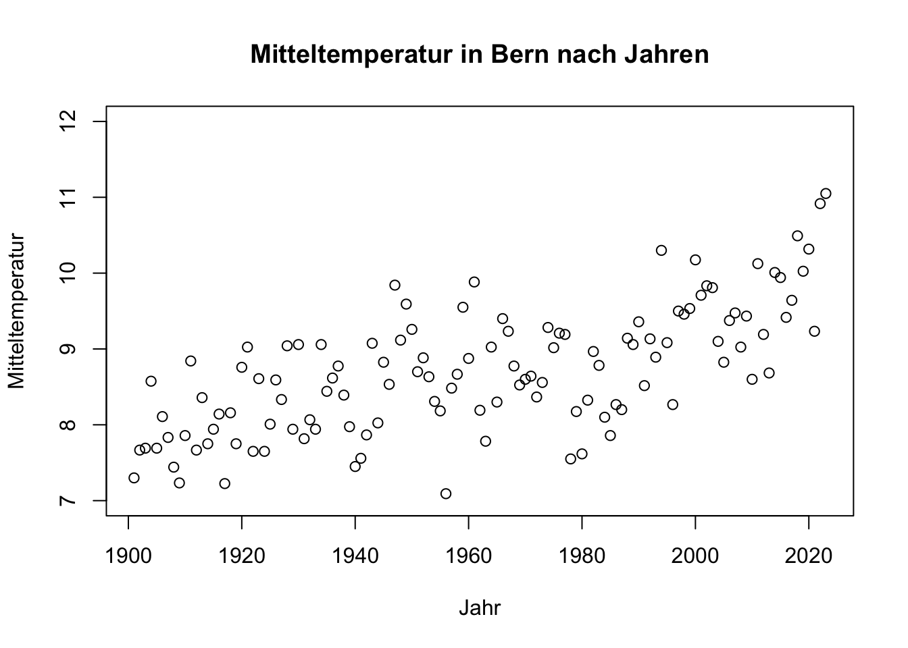
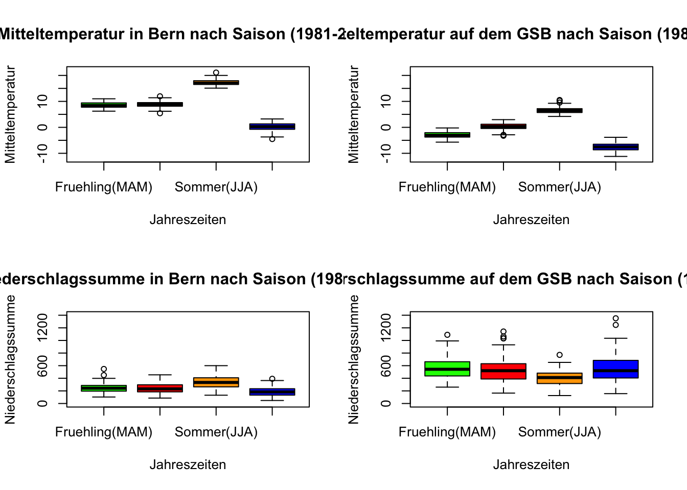

fruehling <- saison[saison[,2] == "Fruehling(MAM)", ]Appendix B — R-Übungen 2
B.1 Grafik erstellen
B.1.1 Aufgabe
- Extrahiert aus den saisonalen Daten:
- die Frühlingsdaten,
- die Sommerdaten,
- die Herbstdaten.
Beispiel:
- Erstellt einen Plot, mit:
- den Jahren auf der x-Achse und
- der Temperatur in Genf auf der y-Achse.
- Stellt dabei die Frühlings-, Sommer- und Herbsttemperaturen als Linien mit unterschiedlichen Farben dar.
B.1.1.1 Schritte:
- Zuerst:
plot(x, y, col = " ", xlab = " ", ...)- Dann mit:
lines(x, y, col = ...)weitere Saisons hinzufügen.
Überschrift und Achsen beschriften.
Linien der beiden Mittelwerte hinzufügen:
abline(h = ...)
Lösung
Jahreszeitentabelle <- read.table("Data/meteodaten_saison.csv",
header = TRUE,
sep = ",")
saison_fruehling <- Jahreszeitentabelle[Jahreszeitentabelle[, 2] == "Fruehling(MAM)", ]
saison_sommer <- Jahreszeitentabelle[Jahreszeitentabelle$Saison == "Sommer(JJA)", ]
saison_herbst <- Jahreszeitentabelle[Jahreszeitentabelle$Saison == "Herbst(SON)", ]
saison_winter <- Jahreszeitentabelle[Jahreszeitentabelle$Saison == "Winter(DJF)", ]
saison_helper <- data.frame(
saison_name = c("Fruehling", "Sommer", "Herbst", "Winter"),
saison_farbe = c("green", "red", "orange", "blue"))
plot(saison_fruehling$Jahr,
saison_fruehling$Bern_Mitteltemperatur,
type = "line",
xlab = "Jahr",
ylab = "Mitteltemperatur",
main = "Mitteltemperatur in Bern nach Jahreszeiten",
ylim = c(-5, 25))Warning in plot.xy(xy, type, ...): plot type 'line' will be truncated to first
characterlines(saison_sommer$Jahr,
saison_sommer$Bern_Mitteltemperatur,
col = saison_helper$saison_farbe[2]
)
lines(saison_herbst$Jahr,
saison_herbst$Bern_Mitteltemperatur,
col = saison_helper$saison_farbe[3]
)
lines(saison_winter$Jahr,
saison_winter$Bern_Mitteltemperatur,
col = saison_helper$saison_farbe[4]
)
legend("topright",
legend = saison_helper$saison_name,
col = saison_helper$saison_farbe,
lty = 1,
cex = 0.8
)
abline(mean(saison_fruehling$Bern_Mitteltemperatur),
0,
col = "green")
- Schnittpunkt mit der y-Achse
- Steigung der Linie
B.2 Jahresmittelwerte
B.2.1 Aufgabe
- Erstellt mittels
aggregate()die Jahresmittelwerte der Temperatur für Genf. - Stellt diese in einem Scatterplot mit Punkten dar:
plot(x, y)- Beschriftet die Achsen und vergebt einen Titel.
Lösung
Jahreswerte <- aggregate(Jahreszeitentabelle$Bern_Mitteltemperatur,
by = list(Jahreszeitentabelle$Jahr),
FUN = mean)
# Für bessere Lesbarkeit: umbenennen der generierten Spaltennamen
colnames(Jahreswerte) <- c("Jahr", "Mitteltemperatur")
plot(Jahreswerte$Jahr,
Jahreswerte$Mitteltemperatur,
col = "black",
xlab = "Jahr",
ylab = "Mitteltemperatur",
ylim = c(7, 12),
main = "Mitteltemperatur in Bern nach Jahren")
B.3 Boxplot
- Wählt den Zeitraum 1981-2010, z.B.:
zeit <- saison[saison[,1] >= 1981 & saison[,1] <= 2010, ]- Stellt die Temperatur- und Niederschlagsverteilungen der Saisons in Genf und Gr. S. Bernhard für diesen Zeitraum in vier
boxplot()-Plots dar.
B.3.1 Hinweise:
- Das Grafikausgabefenster kann mit:
par(mfrow = c(2, 2))in 2 Zeilen und 2 Spalten geteilt werden.
- Beschriftet die Achsen und vergebt Titel. Achtet darauf, für beide Stationen gleiche y-Achsen zu wählen, sodass die Plots visuell vergleichbar sind. Z.B. bei Niederschlag:
ylim = c(0, 1300)- Setzt das Grafikausgabefenster zurück auf 1 Zeile und 1 Spalte:
par(mfrow = c(1, 1))
Lösung
zeitraum <- 1981:2010
# Ausgabefenster in 2x2 aufteilen
par(mfrow = c(2, 2))
boxplot(Jahreszeitentabelle$Bern_Mitteltemperatur ~ Jahreszeitentabelle$Saison,
data = Jahreszeitentabelle[Jahreszeitentabelle$Jahr %in% zeitraum, ],
col = saison_helper$saison_farbe,
xlab = "Jahreszeiten",
ylab = "Mitteltemperatur",
main = "Mitteltemperatur in Bern nach Saison (1981-2010)",
ylim = c(-12, 22))
boxplot(Jahreszeitentabelle$GrStBernhard_Mitteltemperatur ~ Jahreszeitentabelle$Saison,
data = Jahreszeitentabelle[Jahreszeitentabelle$Jahr %in% zeitraum, ],
col = saison_helper$saison_farbe,
xlab = "Jahreszeiten",
ylab = "Mitteltemperatur",
main = "Mitteltemperatur auf dem GSB nach Saison (1981-2010)",
ylim = c(-12, 22))
boxplot(Jahreszeitentabelle$Bern_Niederschlagssumme ~ Jahreszeitentabelle$Saison,
data = Jahreszeitentabelle[Jahreszeitentabelle$Jahr %in% zeitraum, ],
col = saison_helper$saison_farbe,
xlab = "Jahreszeiten",
ylab = "Niederschlagssumme",
main = "Niederschlagssumme in Bern nach Saison (1981-2010)",
ylim = c(0, 1400))
boxplot(Jahreszeitentabelle$GrStBernhard_Niederschlagssumme ~ Jahreszeitentabelle$Saison,
data = Jahreszeitentabelle[Jahreszeitentabelle$Jahr %in% zeitraum, ],
col = saison_helper$saison_farbe,
xlab = "Jahreszeiten",
ylab = "Niederschlagssumme",
main = "Niederschlagssumme auf dem GSB nach Saison (1981-2010)",
ylim = c(0, 1400))
# Ausgabefenster zurücksetzen
par(mfrow = c(1, 1))